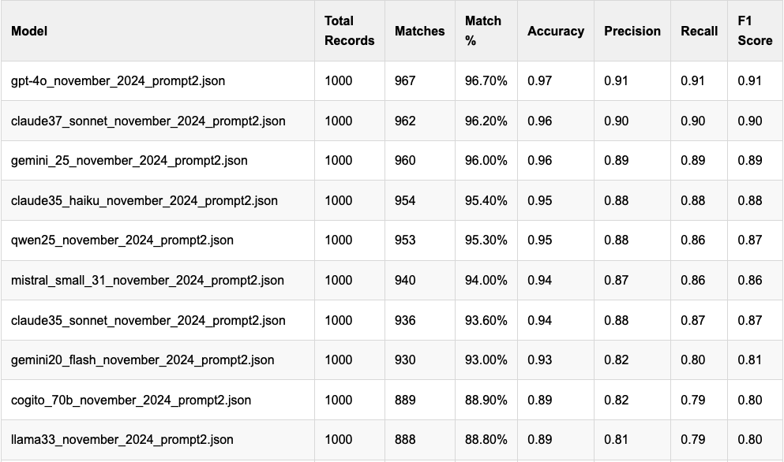

I had been staring at my Political Email Extraction Leaderboard since I first published it, and was disappointed by some of the performances I found in extracting committee names from the disclaimers in fundraising messages. Some of the commercial models did worse than I expected, below 90% in some cases, and I was surprised. I should have been more skeptical.
Once I dug into how I was compiling my stats, I found a pretty simple mistake I made: when matching the committee names produced by LLMs to my ground truth training committees, I was doing an exact match without regard to case sensitivity. So “PA Democratic Party” would not have matched “Pa Democratic Party”. There were not a ton of those kinds of scenarios, but there were some, and as a result, the accuracy of most of the models improved, and in a way that made more sense to me.
Here’s what I changed, code-wise:
if "committee_csv" in merged.columns and "committee_json" in merged.columns:
# Check if the `committee` attributes match
merged["committee_match"] = merged["committee_csv"] == merged["committee_json"]
else:
# If columns do not exist, default to no matches
merged["committee_match"] = Falseto this:
if "committee_csv" in merged.columns and "committee_json" in merged.columns:
y_true = merged["committee_csv"].fillna("none").astype(str).str.lower().str.strip()
y_pred = merged["committee_json"].fillna("none").astype(str).str.lower().str.strip()
merged["committee_match"] = y_true == y_pred
else:
merged["committee_match"] = FalseBy converting the committee names entirely to lower case and calling strip() on them, I reduced the number of false negatives in my results. This had some visible results. For example, GPT-4o previously sat at a less-than-impressive 79.3 percent accuracy and now sits at a much more impressive 96.7 percent accuracy rate. This makes sense, given what I understood to be GPT-4o’s capabilities, and I should have caught this problem sooner.
What this means is that the updated leaderboard is dominated by the commercial models from OpenAI, Anthropic and Google, but Qwen2.5 and Mistral’s Small 3.1 model both scored over 90%, which is impressive in both cases. Check out the new leaders:
You’ll notice that I’ve added a few other columns, too. Those are the standard classification report outputs from our pal scikit-learn, and they provide a bit more context on each model’s performance. I’ll also be publishing soon individual classification reports for each model that go into further detail on the emails.
The changes to the leaderboard suggest a couple of things to me: most decent-sized models do a pretty solid job with this task, which is what I would have hoped to see. I was a little surprised to see Gemma2 models outperform Gemma3 ones here, and that’s worth digging into further to understand. The results from the Cogito models that I added recently initially puzzled me because the larger ones didn’t do much better; now that I’ve fixed the matching problem Cogito’s 70b model hit 89% accuracy, equivalent to Llama 3.3.
I’ve mostly abandoned testing the initial prompt I developed for this, but also have updated that leaderboard, with results that are broadly similar, but interestingly Llama 3.3 seems to have done better with that prompt than the newer one that I prefer. What do you see here?